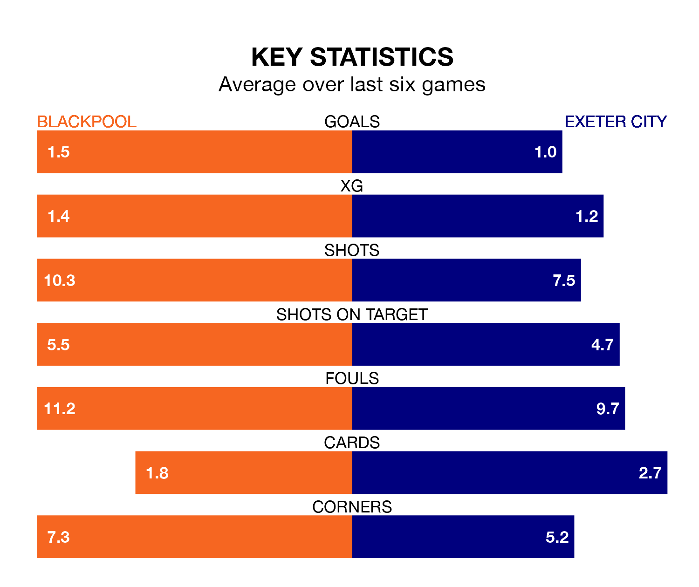

Struggling Exeter City face Blackpool away at Bloomfield Road on Saturday looking to build on a win in their last league outing.
After securing all three points with a 2-1 victory over Carlisle United on January 6, Exeter sit 21st in EFL League One.
They travel to play a Blackpool side eighth in the standings, who also won their last match, 2-0 against Lincoln City, on January 1.
In Jordan Rhodes, Blackpool have the league's sharpest shooter so far this season. He has notched 15 goals in 22 appearances.
His goal rate of one every 128 minutes is much quicker than that of Ryan Trevitt, Exeter's top scorer with a goal every 506 minutes, and a total of three goals in 19 games.
With 18 goals in 25 games so far this season, City are the league's second-lowest scorers with 0.7 goals per game. And they are conceding more than average, letting in 37 goals at a rate of 1.5 per game.
The Seasiders, meanwhile, are above average scorers, with 1.6 goals per game, compared to a league average of 1.3. They have conceded 1.2 goals per game.
The home side are in mixed form in EFL League One, with three wins and three losses from their last six games.
With two wins and two draws over that period, the visitors' form is slightly worse – they have taken eight points from 18, compared to Blackpool's nine.
Updated: 11:29, 08/01/24